This report summarizes my experience during my second co-op work term at Quintessence Wealth Partners (QWealth), where I worked with the Technology team in Toronto. Throughout the term, I worked on backend development, production support, data investigations, and internal tooling improvements. This report outlines my key contributions, goals and skills I developed during the experience.
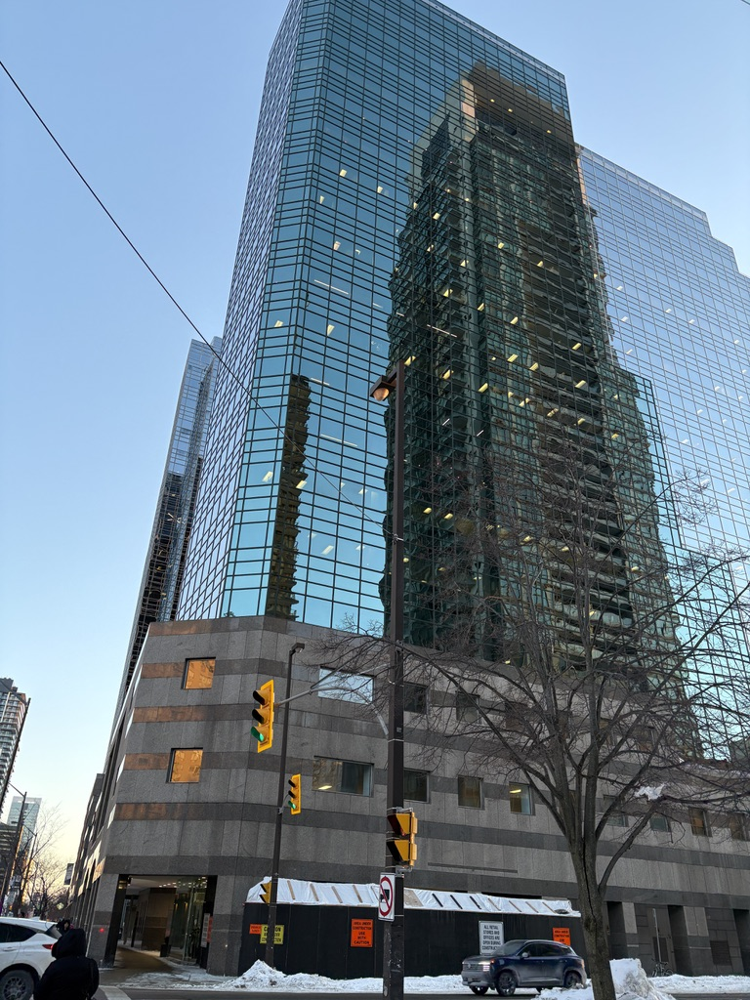
The office on Yonge Street, Toronto
QWealth is a nationwide financial company in Portfolio Management innovation in Canada. Through a partnership-based model, nearly 30 firms have joined QWealth, using its compliance, investment, and technology platforms to support advisors and their clients.
The Tech team maintained multiple internal and client-facing tools, ranging from fund management operations to client applications. The most prominent of these was QCentral, a platform used by advisors to store client financial information, account records, and interaction history. With over 15,000 users and 30,000 contacts, the platform required constant maintenance, feature development, and operational support.
The company operated on a hybrid schedule, with distinct teams coordinating in-office days to accommodate the recently growing staff size.
While working remotely, we communicated through Slack, where work discussions took place alongside casual community channels. One of these was a fitness channel with weekly activity challenges, which helped me keep on top of my health and got me back into swimming.
During the month of February, we joined a 2000 pushup challenge going around, this is how the race to #1 between me and Thomas went, with him doing 400 pushups a day at the end to beat me.
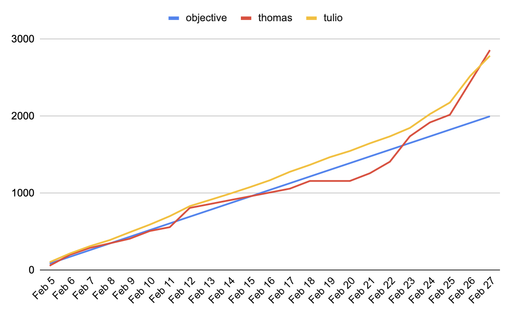
Tulio v Thomas
In-office days often included team lunches at the many restaurants surrounding Yonge Street. On one occasion, when the office space was unavailable due to a building event, the team finished the workday at a nearby board game café.
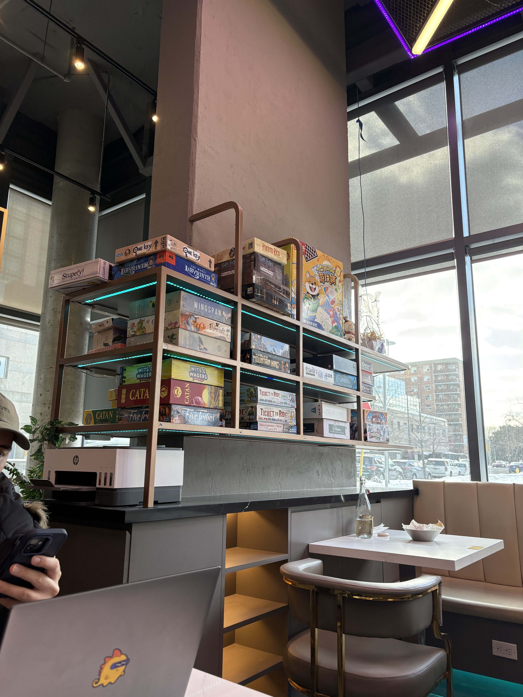
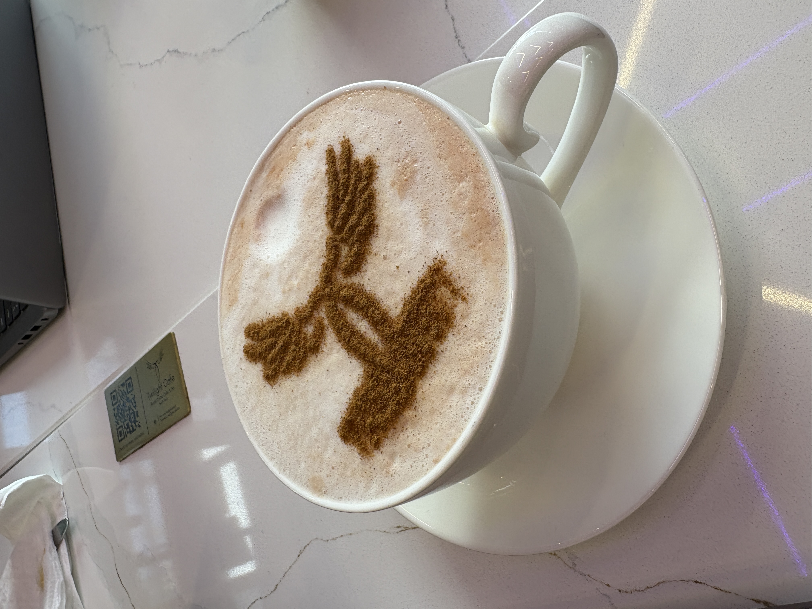
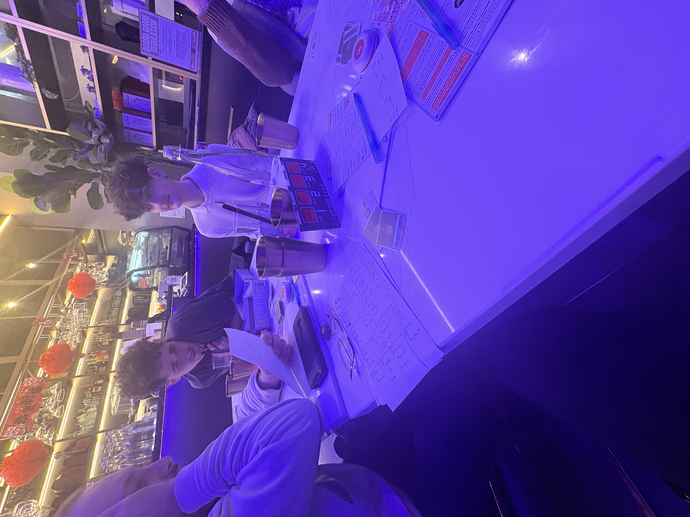
Board game café where we played decrypto
Every Friday, the backend team held a one-hour social meeting where we played games such as Gartic Phone, Jackbox, geography challenges...
One memorable activity involved each team member attempting to draw Europe and the US entirely from memory.
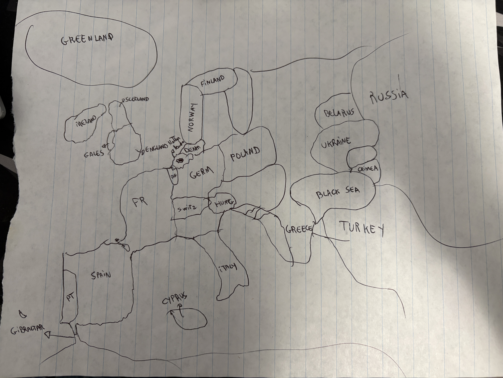
Europe
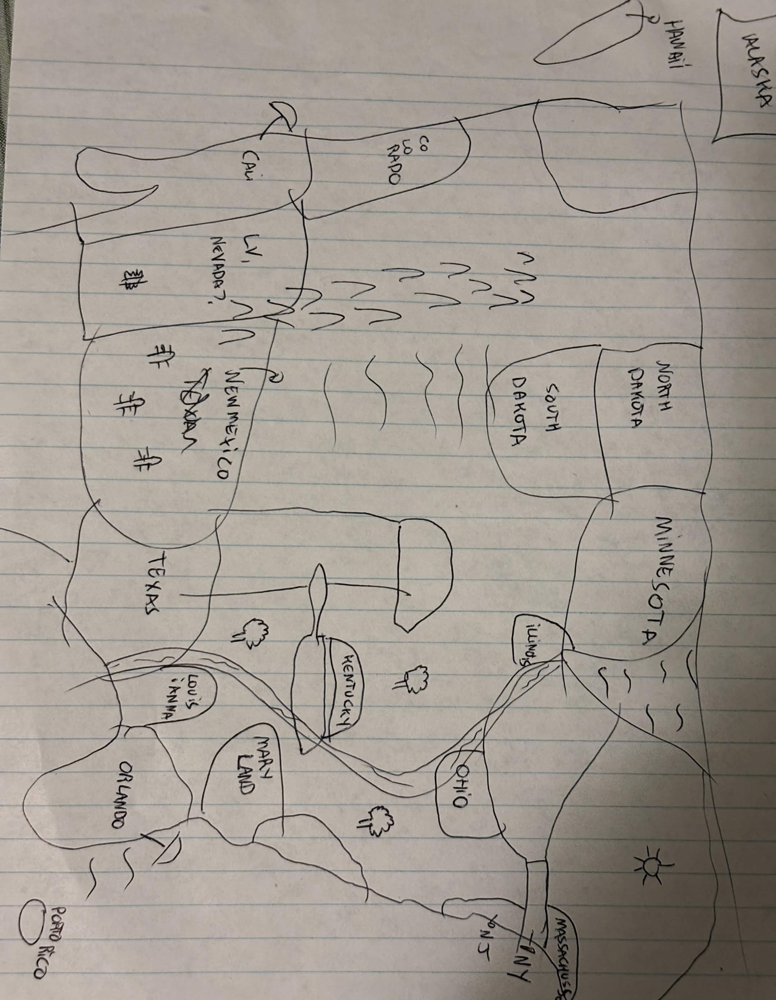
USA
Following the release of a major tax-related project, the team organized a celebration with pizza, board games, cards, and charades (while doing rounds of pushups) on the building's event floor.
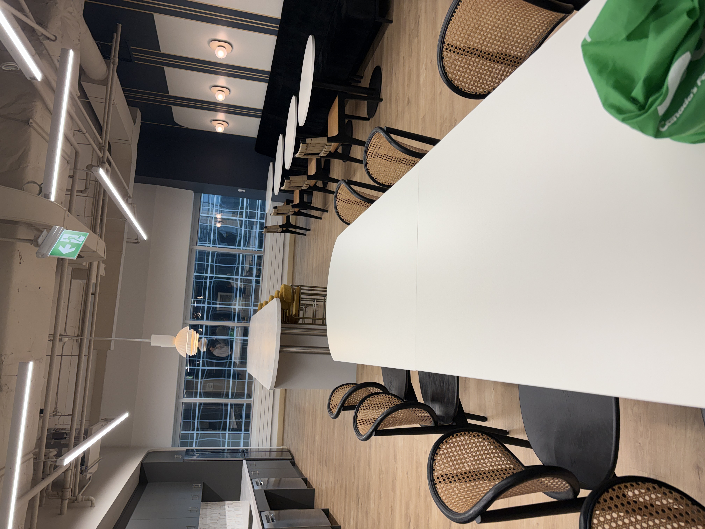
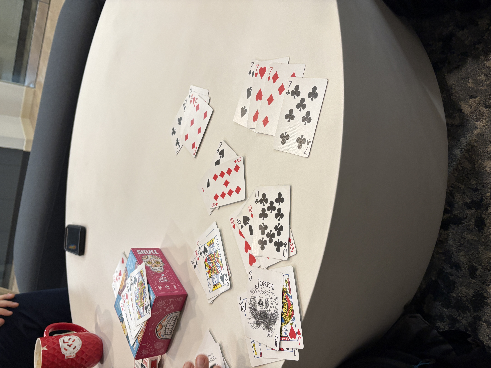
Tax Project celebration
In March, the team also organized an after-hours event at SPIN, a ping pong bar in Toronto, where we socialized over food and drinks, taking turns with the paddles:
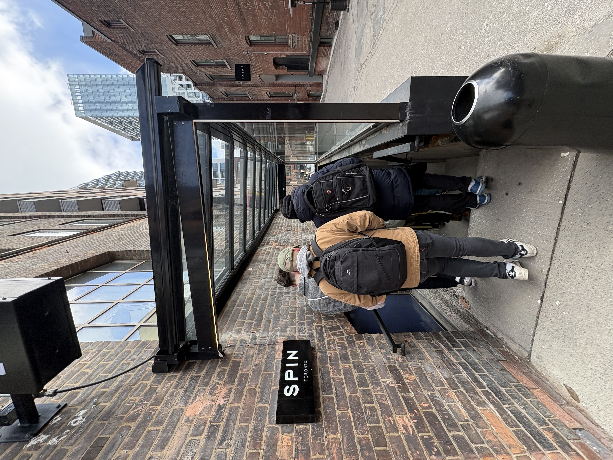
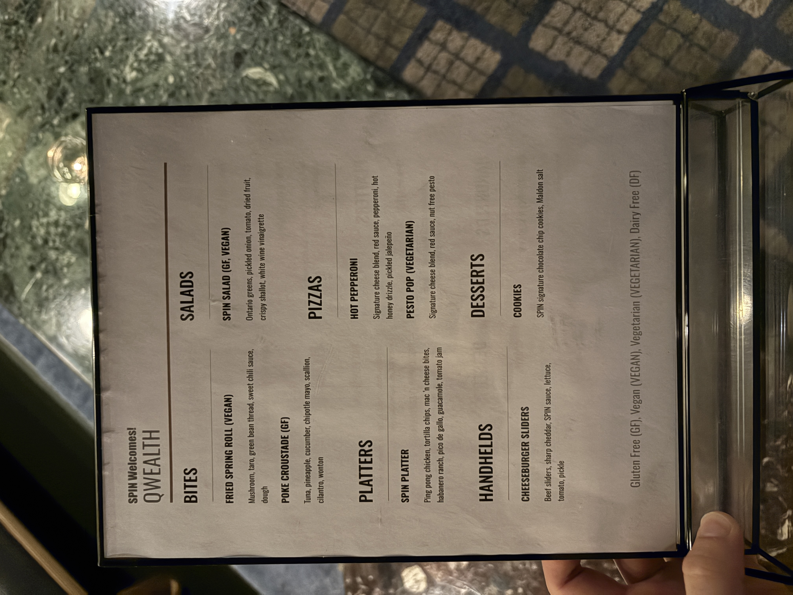
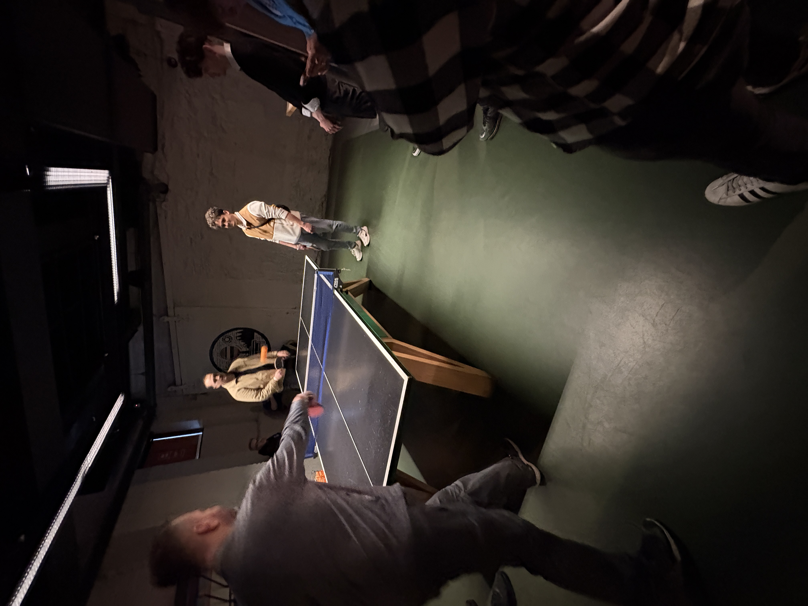
Team event at SPIN, where we had our own menu
These experiences helped create an enjoyable and collaborative work environment. The team culture made it easier to communicate openly, raise issues, ask questions, and build stronger working relationships with the staff.
My role involved collaborating closely with both the Backend Lead and the Tech Support Lead, contributing to the infrastructure and large-scale data systems that support the company's internal tools. I contributed to backend features, investigated API and database-related issues, handled support tickets, and assisted with operational tasks related to the company's internal systems. During periods with increased workload, such as partner onboarding and major releases when the team was stretched thin, I also took on greater responsibility handling support investigations and coordinating issue resolution with other team members.
Goal 1: Develop stronger proficiency in relational database design, SQL querying, and ORM-based data modeling.
While I only had the opportunity to deploy small changes to database tables, I implemented multiple ORM models that were missing in a newly written codebase and ended up with much knowledge on the system's database structure. Over time, I became comfortable enough with the data relationships and workflows to guide other team members through the new ORM structure and assist newer staff in understanding how different systems interacted.
Goal 2: Develop the ability to design and implement features from initial concept through deployment.
Throughout the term, I contributed to multiple issues from the initial investigation stage through debugging, implementation, testing, and deployment. One particularly impactful issue involved a long-standing data duplication bug that affected several sensitive workflows. After investigating the suspected cause, which no one had dedicated time to yet, I was able to implement a solution before the end of my term while also adding logic for automating another time-consuming data task.
Goal 3: Improve my ability to diagnose and resolve production issues in backend services and databases.
As I became more familiar with the platform, I grew increasingly confident investigating production issues, identifying root causes, and implementing fixes independently. Throughout the term, I merged dozens of pull requests containing well over a hundred commits, many of which addressed issues I had identified myself through recurring support tickets and system investigations.
Goal 4: Strengthen my ability to clearly communicate technical concepts, debugging findings, and implementation decisions with both technical and non-technical team members.
Whether assisting business staff through support tickets and direct messages, documenting technical investigations in Jira, or testing incomplete features and providing structured feedback, I improved significantly in communicating technical information clearly and effectively, receiving compliments for it.
Overall, this co-op term provided valuable experience working in a large-scale professional production environment. Compared to my previous work experiences, I took on significantly more responsibility in both backend development and operational support, which helped strengthen my technical problem-solving abilities and confidence as a developer. I gained a much stronger understanding of how software systems are maintained and improved in real-world environments.
Beyond the technical experience, the collaborative and supportive team culture made the term especially enjoyable and helped create an environment where I could continue learning and contributing throughout the semester.